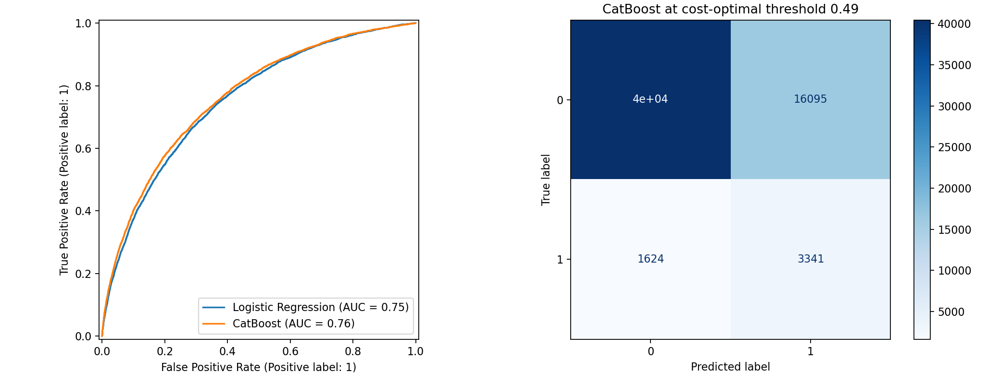
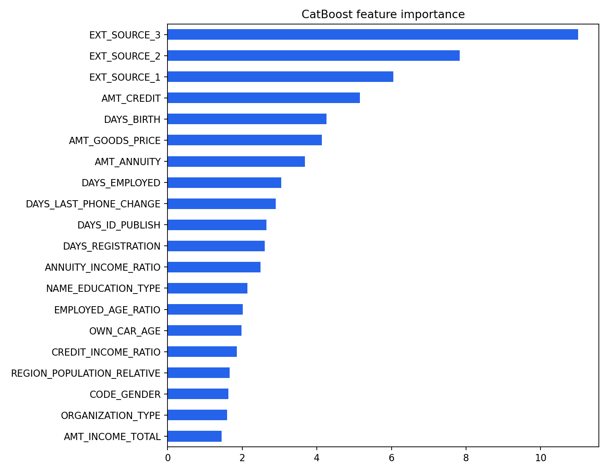

CREDIT RISK LEDGER / COST-SENSITIVE ML
Risk has a price.
A default model whose threshold is chosen in business currency—not by habit at 0.50.
04
Test ROC–AUC0.764
Avg. precision0.251
Cost threshold0.49
The finding
What the model says.
CatBoost led validation ranking and retained that edge on the untouched test set. The threshold minimizes a documented 10:1 false-negative to false-positive cost ratio.
01
307,511 loan applications
307,511 loan applications
02
60/20/20 stratified split
60/20/20 stratified split
03
Logistic Regression + CatBoost
Logistic Regression + CatBoost
04
Validation-only threshold optimization
Validation-only threshold optimization
Evidence
Results, rendered.

